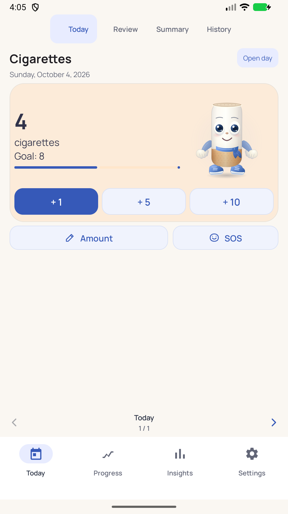
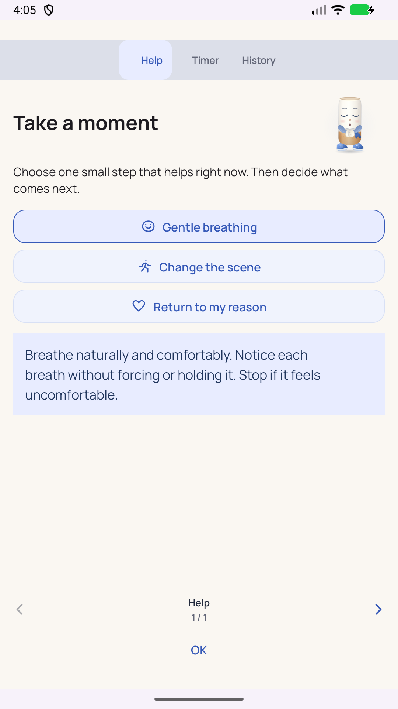
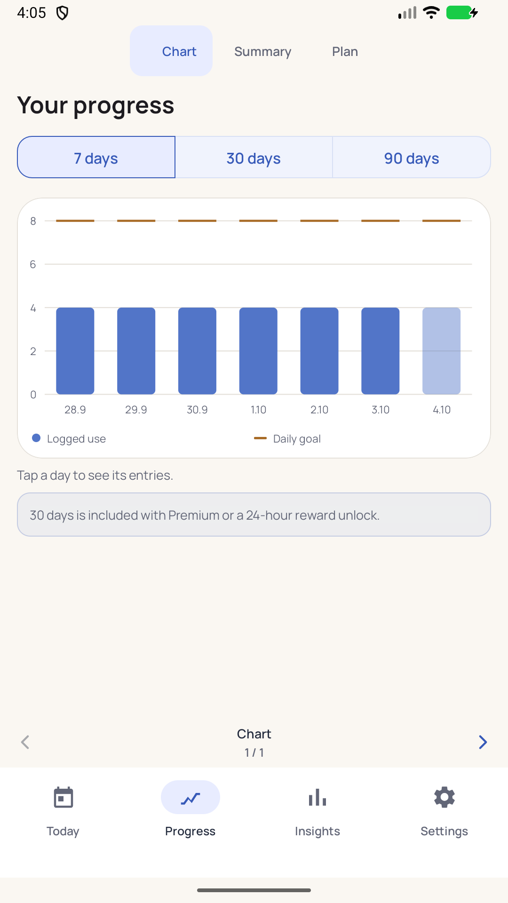
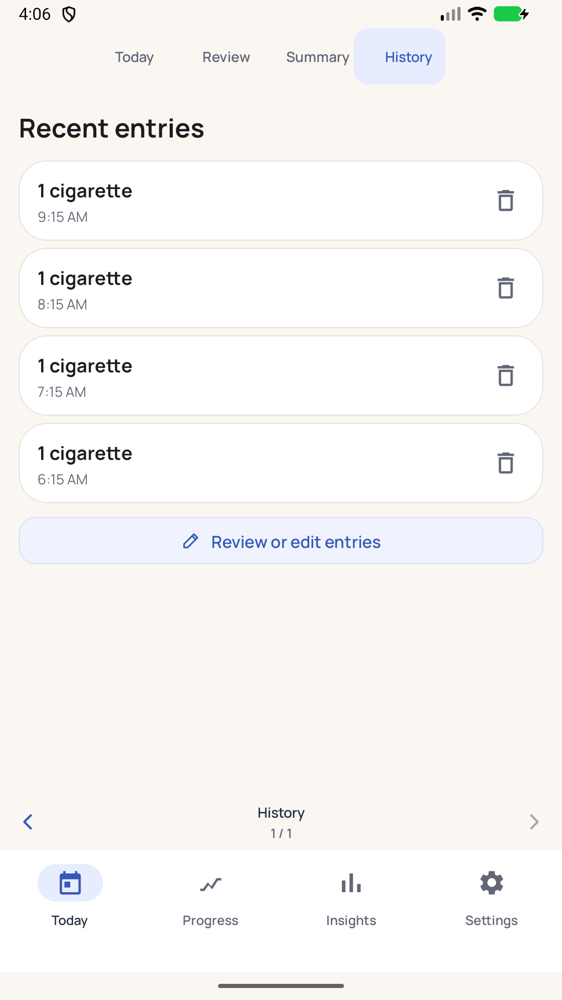

Log in seconds
One tap for quick amounts. Add missed entries, correct timestamps and undo a deletion.
Nicotine tracker · for adults
2.8.0 · Android preview
Track cigarettes, heated tobacco, vape or pouches. Understand your habits and reduce at a pace that works for you.
This is a test preview, not a Google Play release. It uses sample ads; real purchases are not available yet.

One tap for quick amounts. Add missed entries, correct timestamps and undo a deletion.
Open free SOS support, try a short delay and keep your personal reason close.
Review complete days and estimated savings. Missing records never count as zero-use days.
Actual 2.8.0 screens with sample data. Browse left or right.



The preview installs separately from the future production app. Keep your exported backup before moving to a future release. Installation is outside Google Play and Android may ask whether this source can install apps. Only enable installation if you trust this download.
Core logging, SOS, day review, the widget and backup are free. The planned one-time Lifetime Premium unlocks advanced reports and removes banners. There is no subscription. Production pricing and purchasing remain to be configured in Google Play.
CutBack is a behavior and budgeting tool, not medical advice, diagnosis or treatment. Consult a qualified healthcare professional for medical guidance.
SHA-256: f9c37f7e24aac7d154e9a6d36aec5a0f1b83f5ce4537ac96487ef7b3f4b4d170
Download checksum file